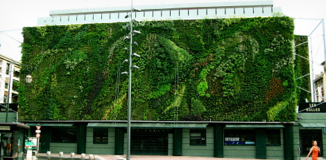
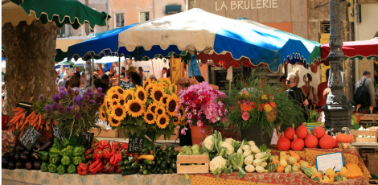
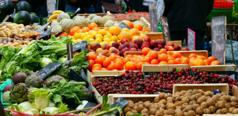
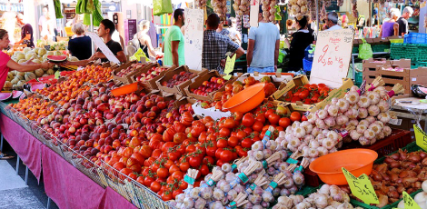
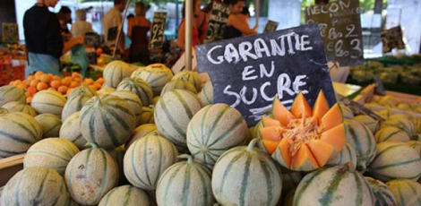
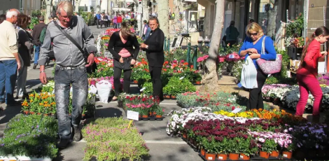
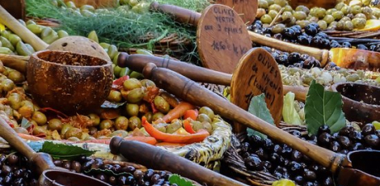

Marchés & foires de vaucluse

Les Halles
Place Pie, Avignon
Les horaires d’ouverture :

Marché Provençal de l’Isle-sur-la-Sorgue
Quai Jean Jaurès, L'Isle-sur-la-Sorgue
Les horaires d’ouverture :

Le marché de Châteauneuf-du-Pape
Place de la Renaissance, Châteauneuf-du-Pape
Les horaires d’ouverture :

Trouver sur la carte
Marché de Carpentras
Les allées Jean Jaurès, Carpentras
Les horaires d’ouverture :
- lundi, mardi, jeudi
- mercredi, vendredi
- samedi, dimanche
- fermé
- 8h - 12h30
- 8h - 12h

Marché de Cavaillon
Place des Fêtes, Cavaillon
Les horaires d’ouverture :

Le marché de Beaumes-de-Venise
Avenue Raspail, Beaumes-de-Venise
Les horaires d’ouverture :

Grand marché provençal de Vaison-la-Romaine
Places princiales, Vaison-la-Romaine